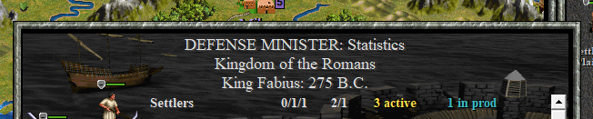

| Previous: Values and Variables | Next: Tables and Loops |
Civilization II Objects and If Statements 🔗
Introduction 🔗
So far in these lessons, the only interaction we’ve had with the Civ II game is to show a couple text boxes. In this lesson, we will introduce a number of new data types which are unique to the Test of Time Patch Project flavour of Lua. These object data types will provide us with ways to get information about the active game state and rules, and to change those things.
In addition, we’ll also introduce two more data types standard to all versions of Lua, the nil and boolean data types. We will also see how to use if statements to allow code to sometimes be ignored.
A Scenario with the Lua Scenario Template 🔗
Download this “ClassicRome” scenario, and extract it into your Scenario folder (or wherever you decide is convenient). This scenario is a combination of files from a Test of Time conversion of the Rome scenario that came with the original Civilization II that I made, and a conversion made by Dadias. To that, I have added the basic files of the Lua Scenario Template, and generated a couple of customized files using scripts. For now, just accept that the scenario has been prepared for writing Lua events.
Open Visual Studio Code, and select the “Open Folder” file option.

Select the ClassicRome scenario folder, and tell VS Code that you trust the authors if you are asked. Double check to make sure that ClassicRome is the root folder, and not either a subfolder or your Scenario folder.
Have a look at the file explorer column. All the files are listed here, even saved games like sc_b278.sav and ROME.SCN which you can’t change with VS Code. There are six folders that contain even more files, mostly .lua files to provide functionality to the template.

A Persistent Scenario Event 🔗
In the last lesson, we wrote a simple onTurn event, but we had to use the Load Script button in the Lua Console every time that we loaded a game. Now, using the Template, we have the event load automatically with the game. Open discreteEvents.lua, and scroll down to line 139, where you will find the following section of code:
---&autoDoc onTurn
discreteEvents.onTurn(function(turn)
--civ.ui.text("discrete on turn event 1")
end)
---&endAutoDoc
Don’t mind the comments. ---&autoDoc onTurn and ---&endAutoDoc are annotations that I added for automatically building parts of this website, in this case the Lua Execution Points page. You can delete them if you want. Similarly, the commented out line
--civ.ui.text("discrete on turn event 1")
Is just there for me to uncomment when testing changes to the template. It can be deleted, too. In fact, everything within the “Discrete Events” section of this file is just example/testing code and can be removed if you don’t want it. (The rest of the stuff is “setup” code that we’ll understand later.)
In the last lesson, we built an event that ran the following two lines of code:
civ.ui.text("It is now turn "..tostring(turn)..".")
civ.ui.text("This is a second message for turn "..turn..".")
Copy these lines into the discreteEvent.onTurn registration starting at line 139.
Save the file. Note that although the Lua Language Server detects a couple of “mistakes” in this file, none of them are in our event. Many files in the template will be coloured yellow, since (at the time of writing this) I haven’t gone through them all to re-document and suppress warnings. (I wrote most of the Template before I discovered LuaLS.)
This scenario folder comes with a saved game to load, so start Test of Time and load the saved game sc_b278 in the ClassicRome scenario folder.
Press CTRL+N to skip your turn, and see the two messages appear.
It can get a bit tedious to wait for the AI to move just to test onTurn events. Fortunately, the Lua Scenario Template provides another way. Open cheat mode, and bring up the console. In the console, type the following command:
console.onTurn()
This will run the code registered for the onTurn event:
The tribeObject and nil Data Types 🔗
Now, let’s do something a bit more interesting. The current time to research a technology for the Romans is 80 turns, which seems like it could be a bit too much. However, if we directly reduce the technology paradigm, that might make technology progress too quickly later in the scenario, or give advantage to large tribes over small ones. Instead, we’re going to give each tribe one tenth of its total research cost each turn.
In order to do this, we’re going to have to use the tribeObject data type, which is a special data type for the Test of Time Patch Project version of Lua. It represents certain characteristics of a Civilization in the current game, and we can use commands involving the tribeObject to get information about the tribe, or to change things about it.
Unlike numbers, strings, and functions, we can’t “construct” a tribeObject directly in code. Instead, we will have to call a function, and get the tribeObject as a returned value. The function civ.getTribe is how we will do that. Here’s the documentation:
getTribe 🔗
function civ.getTribe(id: integer) -> tribe: tribeObject|nilReturns the tribe with id
id(0-7), ornilif it doesn’t exist.
The parameter for civ.getTribe is the id of the tribe, which is an integer. Each tribe has an id number associated with it, based on its position in the player order. The barbarians play first, and they have an id of 0, then the Romans have an id of 1, and so on, until the Celts, who have an id of 7. Next, consider this line:
-> tribe: tribeObject|nil
This tells us what the return value of the function is. tribe is just a label, like the parameter names. It gives the programmer information, but Lua itself doesn’t care. Often, documentation will omit a label for the return value. The | character represents “or”, so the line is telling us that this function will return either a tribeObject or a nil.
The nil data type is a special data type, with one possible value: nil. It is typically used to represent an absence of data, or “nothing,” rather than data itself. The function civ.getTribe(id) returns nil when the id argument doesn’t correspond to an actual tribe. This is a typical use of the nil data type.
Returning to the tribeObject data type, each tribeObject has certain “fields” that we can access (and sometimes change) using the corresponding “key” and a . to join it to the variable holding the tribeObject:
myTribeObject.someKey
Before writing code in discreteEvents.lua or some other script, let’s play around a bit with the tribeObject in the Lua Console. First, note that the console tells us that
Global variables are disabled
The reason (as I’ve written a fair few times already in these lessons) for this will be explained in the lesson on variable scope. For now, we need to re-enable them, because local variables don’t work in the console. I’ve included a command in the Lua Scenario Template to do this, but I don’t expect you to memorize the commands one by one as I tell them to you. Instead, you only need to know one command:
console.commands()
These are commands (or parts of commands, as we’ll see later) that can be used from the console. In your own projects, you may find that I’ve removed some of these commands, or added new ones. The Template still has work to be done, some important, some just polish. For now, the relevant command for us is console.restoreGlobal. Call that (with ()) in the console:
Now, let’s assign the tribeObject corresponding to the Romans into the variable romans:
romans = civ.getTribe(1)
Now, let’s print(romans) and see what we get:

Tribe<id=1, name="Romans", leader="Scipio", money=250, cities=6, units=25, techs=20>
The Tribe<> indicates that the item we’re printing a representation of is a tribeObject. The items within the <> and separated by commas give us information about the fields in the tribeObject. Most of these are direct key-value pairs for certain fields, but not all. The leader field of a tribeObject is actually another Civ II data type: the leaderObject.
For now, type the following commands in the console to see some values for the Roman tribe:
romans.id
romans.name
romans.adjective
romans.researchCost
romans.researchProgress
Here is the full list of tribeObject fields. Let’s look at the documentation of a few fields:
id 🔗
tribeObject.id --> integer(get) Returns the id of the tribe.
The tribeObject.id --> integer means that the id field of the tribeObject has an integer value.
The (get) means that you can get the value of the id, but it can’t be changed.
name 🔗
tribeObject.name --> string(get/set) Returns the name of the tribe (e.g. “Romans”).
tribeObject.name --> string means that the value of the name field of a tribeObject is a string.
The (get/set) means that you can get the value of the name, but you can also assign a new value to it (“set” it).
adjective 🔗
tribeObject.adjective --> string(get/set) Returns the adjectival form of the tribe’s name (e.g. “Roman”).
Like the name field, the value of this field is a string, and the value can be changed.
researchCost 🔗
tribeObject.researchCost --> integer(get) Returns the research cost of the tribe.
Like the id field, the value of this field is an integer, and the field can not be assigned a new value (it is calculated from other game mechanics).
researchProgress 🔗
tribeObject.researchProgress --> integer(get/set) Returns the progress towards the current research (range between 0 and tribe.researchCost).
Like the researchCost field, the value of this field is an integer. However, since it is a (get/set) field, we can assign a new value to it, and we shall do so now.
The syntax to assign a new value to a tribeObject’s field (or a field of any other TOTPP provided object) has this form:
myTribeObject.fieldKey = newValue
So, using the console, we can change the name of the romans to, say, Etruscans. Similarly, we can change the adjective to Etruscan.
romans.name = "Etruscans"
romans.adjective = "Etruscan"
If we look at the Science Advisor, we find that our tribe is now the Kingdom of the Etruscans:

Now, we will go back to the console, and change the research progress. Thus far, we have used a previously assigned variable as the starting point for our field keys. However, we could just use civ.getTribe directly, like this:
civ.getTribe(1).researchProgress = 600
Opening the Science Advisor again, we see that extra beakers have been added to the beaker box:

Now, let us get back to our event to give each tribe one tenth of their research cost each turn.
We first need to choose a suitable “execution point” for our event. Execution point is a term I use for a place where the game checks if there is Lua code registered to be executed, and, if there is, runs the code before continuing with the game. This particular event has several reasonable execution points, but I’ve chosen to use onCityProcessingComplete.
There is already an example snippet of code for this execution point in discreteEvents.lua, but instead of giving you the line number, I’ll introduce VS Code’s search feature. Press the search icon  on the left, and that will bring up the search bar. Type in
on the left, and that will bring up the search bar. Type in
discreteEvents.onCityProcessingComplete
It will help to widen the search tab. You will get 8 results in 3 files:
We’re looking for a result in discreteEvents.lua, and there are two, highlighted in orange. Click on the first result.

You will be brought here:

With the result we clicked on in a lighter shade of orange than the other result, which is also highlighted. Click on the file explorer icon to close the search.
If we hover the cursor over onCityProcessingComplete, we get some documentation about the function:

Here, the documentation tells us that the registered function must have two parameters: turn, which must accept integer arguments, and tribe, which must accept tribeObject arguments. Although the documentation doesn’t explicitly tell us this, it is pretty clear that the turn is an integer giving the current turn number, and tribe is the tribe that has just finished processing its cities.
First, we can delete the following testing code from our function:
if _global.eventTesting then
civ.ui.text("discreteEvents.onCityProcessingComplete for "..tribe.name.." on turn "..tostring(turn))
end
Since the tribe function argument is already a tribeObject, we don’t need to use civ.getTribe to access the tribeObject that we need. Instead, we can move directly to changing the researchProgress field:
discreteEvents.onCityProcessingComplete(function(turn,tribe)
tribe.researchProgress = tribe.researchProgress + math.floor(tribe.researchCost/10)
end)
Let’s understand this calculation:
- We must start with the existing amount of accumulated research, so the right hand side must have
tribe.researchProgress. - Since we want to give a free 1/10 of research costs each turn, that must be computed, so we must have
tribe.researchCost/10. - We must assign an integer to
tribe.researchProgress, but division by 10 is not guaranteed to have an integer result. Therefore, we rely on the standard Lua functionmath.floorto round downtribe.researchCosts/10to the nearest integer. - The final step of the calculation is to add the existing value to the new increment.
Save this new event, and load a saved game. The science advisor is at about half (unless you saved after making the earlier changes). We can test this event with the console command console.onCityProcessingComplete(). You should see an increased number of beakers. However, it might not be easily noticeable. But instead of taking and comparing pictures, we can just change the divisor from 10 to 2. After all, if our code will work when dividing by 2, we’d expect it to work dividing by 10 as well.
So, make the change, save the game, and test the event, both by using console.onCityProcessingComplete() and by letting the game go through another turn. Note that the Science Advisor can’t show beyond 100% beakers, so you may have to save and load between tests to see a noticeable difference because the previous research progress was a bit less than half way done.
Remember to change your 2 back to 10!
The Boolean Data Type 🔗
It frequently comes up in programming that we find it convenient to use a data type with only two possible values: true or false. This data type is called the boolean data type, sometimes shortened to “bool.” The term “Boolean” gets its name from George Boole, a mathematician who studied logic where true and false (or 0 and 1) were the only possible values.
Let’s have a look at the tribeObject again. One of the fields has a boolean value:
isHuman 🔗
tribeObject.isHuman --> boolean(get/set) Returns whether the tribe is a/the human player.
The value of this field is true when the tribe is controlled by a human player, and false when the tribe is controlled by the AI.
There are also a lot of functions that return booleans. One example is civ.isTribe:
isTribe 🔗
function civ.isTribe(object: any) -> booleanReturns
trueifobjectis a tribe,falseotherwise.
This function accepts any kind of object, and returns a boolean. It returns true if the object is a tribeObject and false otherwise.
If Statements 🔗
So, we can now tell if an unknown object is a tribeObject or if a tribeObject is controlled by a human player. But what good does it do us? Until now, all the programs we’ve written have always executed the same code. However, we don’t always have to execute the same instructions each time. We can use an if statement to execute code only if some value is true. The syntax for if statements take this form:
-- code here is always executed
if value then
-- Execute code here only if the value is true
end
-- code here is always executed
That is, when the Lua Interpreter is executing code, and it arrives at an if, Lua will determine if the value between if and then is true or false. If the value is true, the code between then and end is executed. If the value is false, the Lua Interpreter ignores everything until the corresponding end is reached, at which point it continues executing code. If value is something more complicated than a simple variable, the expression will be evaluated to determine if it is true or false.
Let’s have a look at a simple event with an if statement:
discreteEvents.onCityProcessingComplete(function (turn, tribe)
if tribe.isHuman then
local leaderName = tribe.leader.name
civ.ui.text(leaderName.."! The "..tribe.adjective.." Empire awaits your orders.")
end
end)
This is another event which takes place after all city production is done for the turn, and the tribe is just about ready to start moving units.
if tribe.isHuman then
This line gets the value registered in the isHuman field for the currently active tribe. If it is false, the code between then and end is skipped, which, in this case, brings the Lua interpreter to the end of the function.
If tribe.isHuman is true, we progress to the next line:
local leaderName = tribe.leader.name
On the right hand side, we begin by evaluating tribe.leader.
leader 🔗
tribeObject.leader --> leaderObject(get) Returns the leader of the tribe.
This field references a leaderObject, which is a data type that contains information about a tribe’s leader. Relevant to us is the name field:
name 🔗
leaderObject.name --> string(get/set) Returns the name of the leader.
So, if we call the result of tribe.leader leaderOfTribe, then our next step is to evaluate leaderOfTribe.name, which gives us a string corresponding to the leader’s name. Therefore, the leaderName is assigned a string value, which is the tribe leader’s name.
Next, we evaluate
civ.ui.text(leaderName.."! The "..tribe.adjective.." Empire awaits your orders.")
This is stuff we’ve seen before. It is joining several strings together to form a message, and then displaying it.
After this, the end of the if statement is reached, and, subsequently, the end of the entire function.
Add this code to discreteEvents.lua, save the file, re-load your civ game, and test it out.


If-Else Statements 🔗
In our last example, we checked if tribe.isHuman was true, and did something if it was. If tribe.isHuman was false, nothing was done. However, we will often want to do one thing if a value is true and something else if it is false. The if-else statement provides a simple way to do that. Here’s the syntax:
if value then
-- execute code here if the value is true
-- do not execute if the value is false
else
-- execute code here if the value is false
-- do not execute if the value is true
end
Let’s see this syntax in another example. We’ll add a little bit of flavour to the scenario by changing the name of the leader of the Romans every turn, to reflect the alternating nature of the consulship.
discreteEvents.onTurn(function(turn)
if turn % 2 == 0 then
-- turn is even
civ.getTribe(1).leader.name = "Scipio"
else
-- turn is odd
civ.getTribe(1).leader.name = "Fabius"
end
end)
Let’s go through this event:
discreteEvents.onTurn(function(turn)
This is an onTurn event (so it takes place after the Celts move and before the Barbarians move), and the turn parameter will be the number of the turn that is starting.
if turn % 2 == 0 then
This line introduces two new operators, % and ==. turn % 2 is evaluated first, so let’s start with %, the “modulo operator.” The modulo operator gets the remainder of a division. Usually, when we divide one number by another, we don’t get an even split. For example % operator extracts that 3 for us in this example. So, 11 % 4 evaluates as 3 because 3 is the left over remainder when dividing 11 by 4.
In the case of turn % 2, the result can either be 0 (turn is an even integer, so there is 0 left over when dividing by 2) or 1 (turn is an odd integer, so there is 1 left over when dividing by 2).
The == operator checks if the values to either side are equal. If they are, the result is true, otherwise, the result is false. So, if turn is an even integer, then turn % 2 evaluates to 0, and then 0 == 0 evaluates to true. If we go through each step of evaluating the line, if the turn is even, we get
-- suppose turn = 4
if turn % 2 == 0 then
if 4 % 2 == 0 then
if 0 == 0 then
if true then
If turn is an odd number, then
-- suppose turn = 5
if turn % 2 == 0 then
if 5 % 2 == 0 then
if 1 == 0 then
if false then
Our next line of code (plus the comment above it) is:
-- turn is even
civ.getTribe(1).leader.name = "Scipio"
This code is run if the turn is even. This is the first time we’ve had to evaluate the left hand side of an = sign assignment. We can do this when we are assigning a value to a field. The evaluation is as follows:
civ.getTribe(1).leader.name = "Scipio"
romanTribeObject.leader.name = "Scipio"
romanTribeLeader.name = "Scipio"
So, if turn % 2 == 0 we change the name of the Roman Leader to Scipio, and ignore everything between else and end. Otherwise, we skip this line of code and process this line instead:
-- turn is odd
civ.getTribe(1).leader.name = "Fabius"
The evaluation is exactly the same as above, except that the leader name is set to "Fabius" instead.
Here’s the code typed into VS Code in discreteEvents.lua
Save the file, load your game again, and test this new event. Not only will you receive different messages from our previous event, when you check reports like the Science Advisor, the name of the Roman leader will be different.



The and & or Operators 🔗
It often happens that we want to write an if statement that is more complicated than a single true or false evaluation. We can use the and and or operators to combine several boolean values into a single result.
Let’s write an event to show a message when the Romans capture all of Sicily, that is, when they own both Lilybaeum and Syracuse. To do this, I should first introduce two more TOTPP data types: the tileObject and the cityObject.
The tileObject represents a single tile on the map. It keeps information like the current state of tile improvements, as well as whether there is a tribe that has units defending the tile. The function civ.getTile(x,y,z) can be used to get a tileObject from its coordinates. For our purposes now, we’re interested in one particular field of the tileObject:
city 🔗
tileObject.city --> cityObject|nil(get) Returns the city at the tile’s location, or
nilif there’s no city there.
We will use the city field of specific tileObjects in order to get cityObjects for the cities of Lilybaeum and Syracuse. A cityObject has fields for characteristics such as city size, the current production order, and accumulated shields. What we need for now, however, is the owner field:
owner 🔗
cityObject.owner --> tribeObject(get/set) Returns the city’s owner.
Find the sample code for discreteEvents.onCityTaken in discreteEvents.lua. You may wish to practice with the search feature again. Since the example code is there, we might as well do something with it.
We’ll begin by storing the cityObjects corresponding to Lilybaeum and Syracuse in appropriately named variables. While we’re at it, we will give a name to the Romans tribe object:
local lilybaeum = civ.getTile(41,53,0).city
local syracuse = civ.getTile(44,56,0).city
local romans = civ.getTribe(1)
It is easy to get the coordinates of a city from the game. That allows us to get the tileObject of the tile the city is on, and from there, we reference the city field to get the relevant cityObject. By assigning these city and tribe objects to well named variables, the rest of our code will be more readable.
discreteEvents.onCityTaken(function(city,defender)
if (city == lilybaeum or city == syracuse) and
syracuse.owner == romans and
lilybaeum.owner == romans then
civ.ui.text("The "..romans.name.." have captured "..city.name..
" from the "..defender.name.." and, in so doing, have "..
"completed their conquest of the island of Sicily.")
end
end)
Let’s begin with
discreteEvents.onCityTaken(function(city,defender)
From the execution points documentation:
City Captured 🔗
This execution point is triggered when a city is captured by another tribe. The execution point takes place after the city has been captured, but before the units supported by the city are disbanded.
discreteEvents.onCityTaken(function(city,defender) --civ.ui.text(city.name.." taken from "..defender.name.." discrete event") end)The
cityis the city that was captured.The
defenderis the tribe that owned the city before it was captured. To get the tribe that captured the city, usecity.owner.
So, the captured city and the city’s previous owner are provided to us, using the corresponding TOTPP objects. Next, we have the if statement, which is split over several lines. Let’s look at the first line:
if (city == lilybaeum or city == syracuse) and
The ( and ) means that the code inside them is resolved first, so we look at city == lilybaeum or city == syracuse first. The == operator checks for equality between the items on either side, so this code first evaluates whether the captured city is the same city as Lilybaeum and whether the captured city is Syracuse.
Next, we look at the or operator. The expression a or b returns true if a is true, if b is true, or if both a and b are true. It returns false if both a and b are false.
Therefore, (city == lilybaeum or city == syracuse) evaluates to true if and only if the captured city was either Lilybaeum or Syracuse. For the rest of this analysis, let’s replace that with correctCityCaptured, which will be true or false.
if correctCityCaptured and
syracuse.owner == romans and
lilybaeum.owner == romans then
Here, syracuse.owner == romans is true if the Romans own Syracuse, and similarly, lilybaeum.owner == romans if the Romans own Lilybaeum. Since the onCityTaken event happens after the cityObject’s owner field is changed to the conqueror, both of these will be true at the moment the Romans complete their conquest of Sicily.
Now, we look at the and operator. The expression a and b returns true only if both a and b are true. If either of them is false, then a and b also evaluates as false. Furthermore, a and b and c is true if and only if a, b, and c are all true. Therefore, the if statement condition is met if and only if all three conditions are true.
- The captured city was Lilybaeum or Syracuse. (Without this, this event would trigger every time the Romans captured a city after they conquered Sicily.)
- The Romans own Syracuse
- The Romans own Lilybaeum
civ.ui.text("The "..romans.name.." have captured "..city.name..
" from the "..defender.name.." and, in so doing, have "..
"completed their conquest of the island of Sicily.")
This is, once again, joining strings together to form a message. The only new thing to note here is that I split the message into several lines using the .. operator. This is because a string defined by " marks must be closed on the same line it is opened.
In discreteEvents.lua, the event code should look something like this:
Test out the event (cheating, of course), and make sure it displays when completing the conquest of Sicily, but not when conquering another city after owning Sicily.
Something you may have noticed about the code we just wrote is that the variables we defined are underlined in yellow by the Lua Language Server. If we look at the message, we see:

The Lua Language Server has noted that both tile.city and civ.getTribe can return nil values, but we’re using variables as if they are not nil without first checking this in code. We’ll discuss this kind of check in another lesson. However, we have an option to tell the Lua LS that we know the variables are not nil. We can add the following annotations:
local lilybaeum = civ.getTile(41,53,0).city --[[@as cityObject]]
local syracuse = civ.getTile(44,56,0).city --[[@as cityObject]]
local romans = civ.getTribe(1) --[[@as tribeObject]]

Because the @as annotation is written like this --[[@as dataType]] instead of being prefixed by --- because it is an in-line comment. It has to be that way, because it can sometimes be necessary in function calls:
myFunctionForACity(civ.getTile(41,53,0).city --[[@as cityObject]])
If the fictional myFunctionForACity requires a cityObject as the argument, Lua LS would object to what we’ve written without the annotation.
Elseif Statements 🔗
So far, we’ve used if statements when there is one thing that we might want to do, and if-else statements if there are two things that we might want to do, and we know that we want one of them done. However, we might have a situation where we want exactly one thing done, but we have more than two possible options. In this situation, we can use the elseif keyword to extend an if or if-else statement to contain more possibilities.
Let’s examine an event that shows a message if the Romans capture Carthage, and a different message if the Romans capture a Carthaginian city that isn’t Carthage.
local carthaginians = civ.getTribe(2) --[[@as tribeObject]]
local carthage = civ.getTile(36,62,0).city --[[@as cityObject]]
discreteEvents.onCityTaken(function (city, defender)
if city.owner ~= romans then
return
end
if city == carthage then
civ.ui.text("The "..romans.name.." have won a great victory by capturing "..carthage.name.."!")
elseif defender == carthaginians then
civ.ui.text("The "..romans.adjective.." campaign against the "..carthaginians.name.." is progressing.")
end
end)
First, we define a couple useful variables, just as we did for the last event. This is also an onCityTaken event.
local carthaginians = civ.getTribe(2) --[[@as tribeObject]]
local carthage = civ.getTile(36,62,0).city --[[@as cityObject]]
discreteEvents.onCityTaken(function (city, defender)
Next, let’s look at this small if statement:
if city.owner ~= romans then
return
end
The ~= operator is the not equal to operator, so it evaluates as true if city.owner is not the romans, and false if it is. The return line stops the function, so none of the rest of the event happens. Essentially, these lines check if the conqueror of the city is the Romans, and, if it isn’t, stops the function. This way, all subsequent code is only triggered if the Romans are the ones who captured the city.
if city == carthage then
civ.ui.text("The "..romans.name.." have won a great victory by capturing "..carthage.name.."!")
This checks if the captured city is Carthage (since we registered the Carthage cityObject as carthage earlier). If it is, the message is shown. By using carthage.name our message will change if Carthage is renamed for some reason.
Note that this message will be shown even if Carthage is no longer owned by the Carthaginians.
elseif defender == carthaginians then
civ.ui.text("The "..romans.adjective.." campaign against the "..carthaginians.name.." is progressing.")
end
This section of code checks if the tribe that lost the city is the Carthaginians, and, if so, displays the message. Because this is an elseif section, this code will not run if Carthage is the captured city. Since Carthage triggered an earlier section in the if/elseif block of code, this section will never be triggered for Carthage.
Here’s how this code combines with the previous event. Note that this event must be after the previous one in discreteEvents.lua because it uses the romans variable, and in Lua, a variable must be defined earlier in the code than when it is used.

Save this event, load your game, and try it out.
Conclusion 🔗
In this lesson, we’ve worked with several kinds of TOTPP objects in order to get or change information in the game. We’ve also worked with if statements so that our code can do different things depending on the arguments provided when the event is triggered. In the next lesson, we will increase the sophistication of our events through the use of tables and loops.
| Previous: Values and Variables | Next: Tables and Loops |